c3-s1 · حكايات الحارة · 4.4 ث معدّل
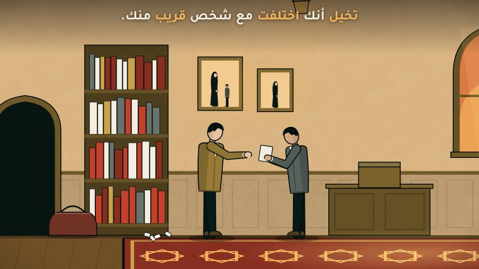

تخيل أنك اختلفت مع شخص قريب منك.
c3-s2 · حكايات الحارة · 8.1 ث معدّل


كنت مقتنعًا أنه أخطأ في حقك، ثم ظهرت لك معلومة تثبت أنك أسأت فهم الموقف.
c3-s3 · حكايات الحارة · 4.9 ث معدّل


الآن لم تعد المشكلة في معرفة ما حدث.
c3-s4 · حكايات الحارة · 4 ث معدّل


أصبحت في موقفك مما عرفت.
c3-s5 · حكايات الحارة · 4 ث معدّل


هل تعتذر؟
c3-s6 · حكايات الحارة · 4 ث معدّل

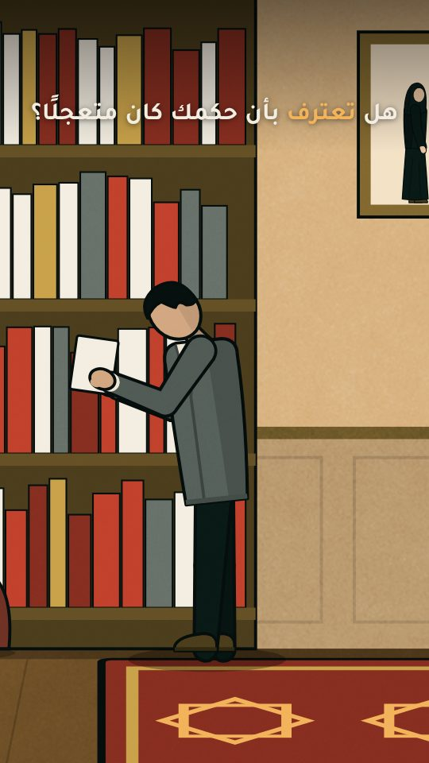
هل تعترف بأن حكمك كان متعجلًا؟
c3-s7 · حكايات الحارة · 5.4 ث معدّل
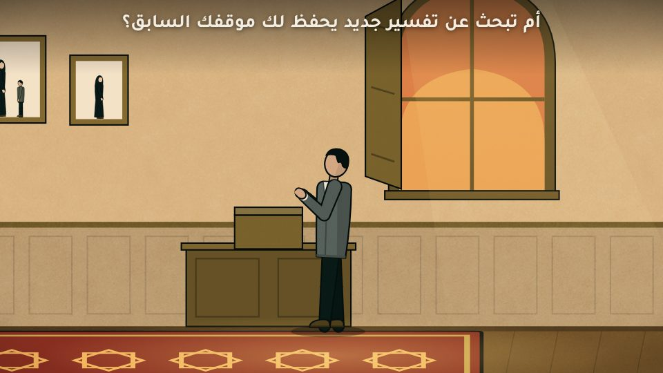

أم تبحث عن تفسير جديد يحفظ لك موقفك السابق؟
c3-s8 · حكايات الحارة · 8.6 ث معدّل
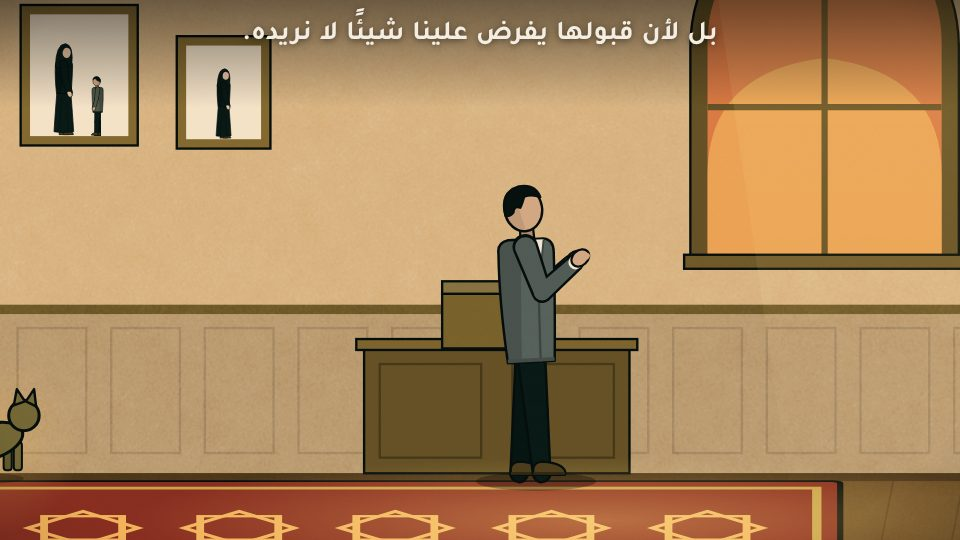
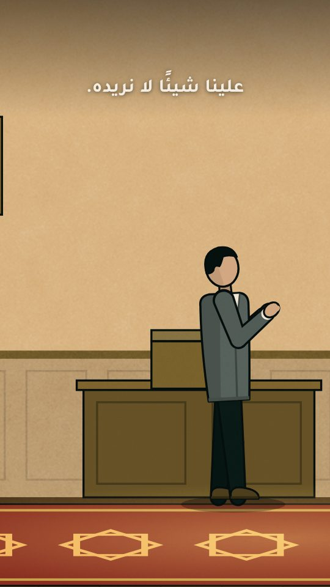
قد نرفض بعض الحقائق لا لأن أدلتها غائبة، بل لأن قبولها يفرض علينا شيئًا لا نريده.
c3-s9 · حكايات الحارة · 4 ث معدّل

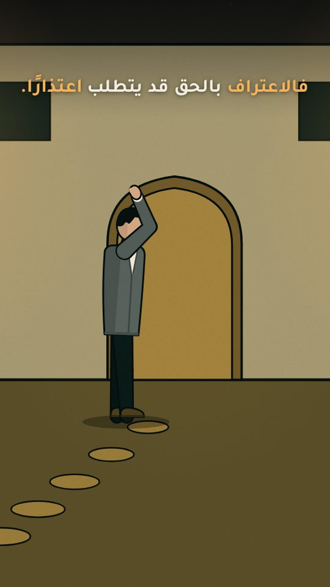
فالاعتراف بالحق قد يتطلب اعتذارًا.
c3-s10 · حكايات الحارة · 4 ث معدّل
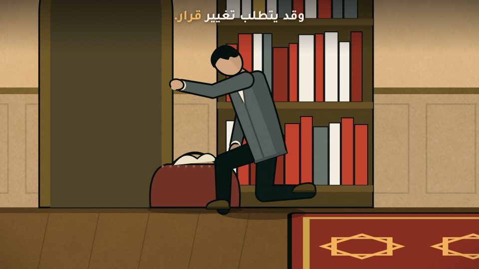

وقد يتطلب تغيير قرار.
c3-s11 · حكايات الحارة · 4 ث معدّل


وقد يتطلب التخلي عن مصلحة.
c3-s12 · حكايات الحارة · 4.9 ث معدّل
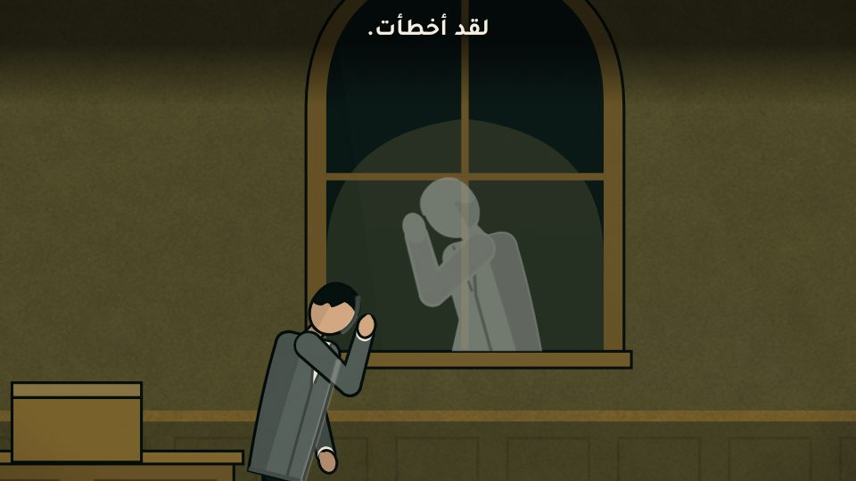

وقد يتطلب أن يقول الإنسان لنفسه: لقد أخطأت.
c3-s13 · حكايات الحارة · 4 ث معدّل

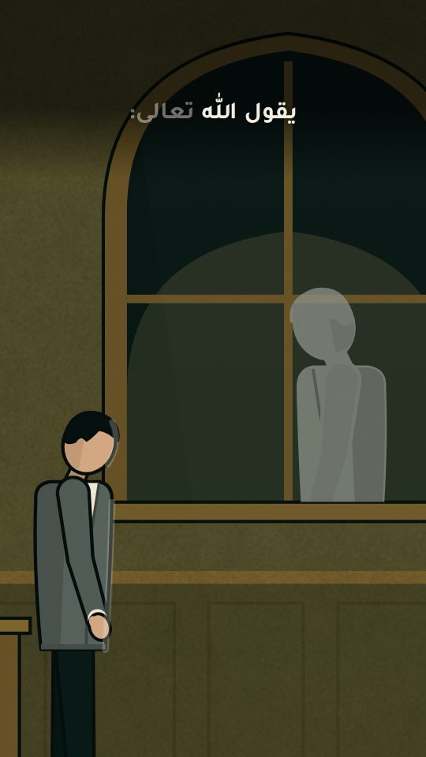
يقول الله تعالى:
c3-s14 · بطاقة الآية · 7 ث دون تغيير


—
c3-s15 · حكايات الحارة · 6.7 ث معدّل

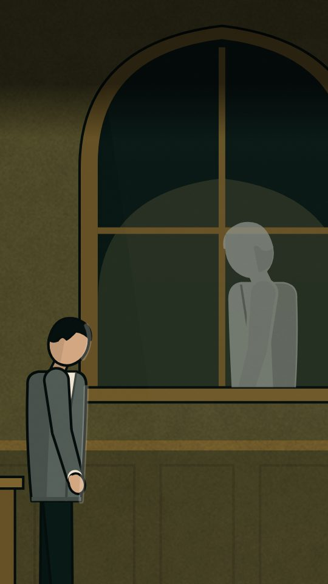
وفي سياق الآيتين تذكير بأن الإنسان شاهد على نفسه، ولو قدّم أعذاره.
c3-s16 · حكايات الحارة · 4 ث معدّل

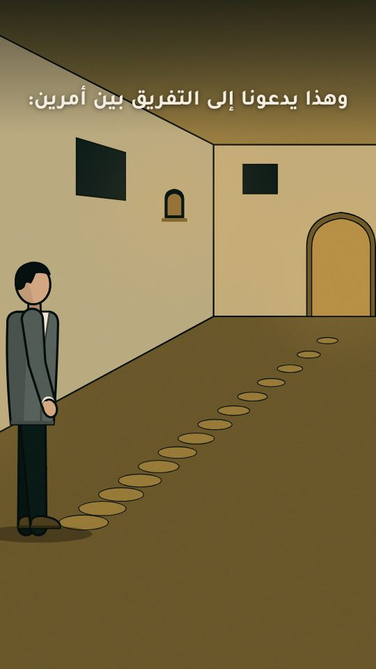
وهذا يدعونا إلى التفريق بين أمرين:
c3-s17 · حكايات الحارة · 4 ث معدّل
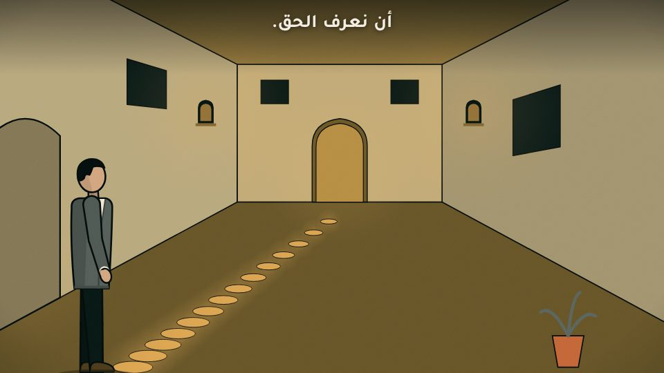

أن نعرف الحق.
c3-s18 · حكايات الحارة · 4 ث معدّل
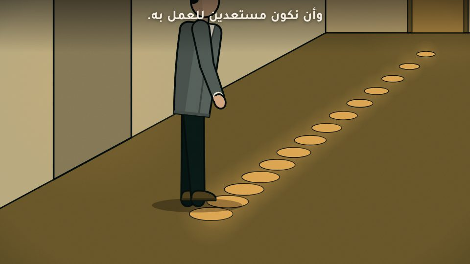

وأن نكون مستعدين للعمل به.
c3-s19 · حكايات الحارة · 4 ث معدّل
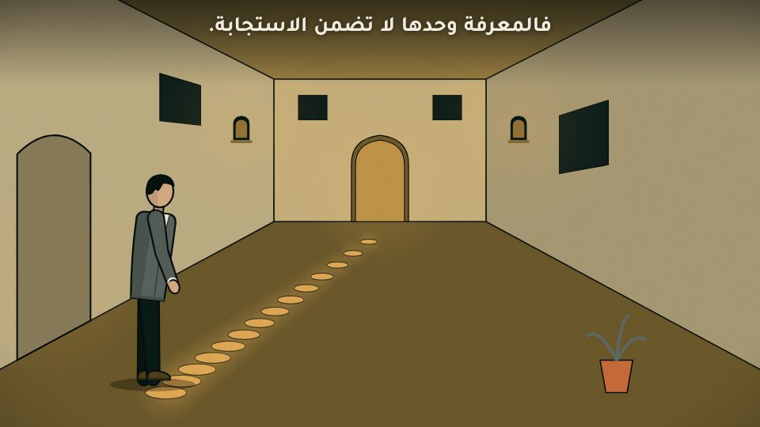

فالمعرفة وحدها لا تضمن الاستجابة.
c3-s20 · حكايات الحارة · 5.8 ث معدّل


قد يعرف الإنسان أن الاعتذار واجب عليه، ثم يمنعه الكبر.
c3-s21 · حكايات الحارة · 5.8 ث معدّل
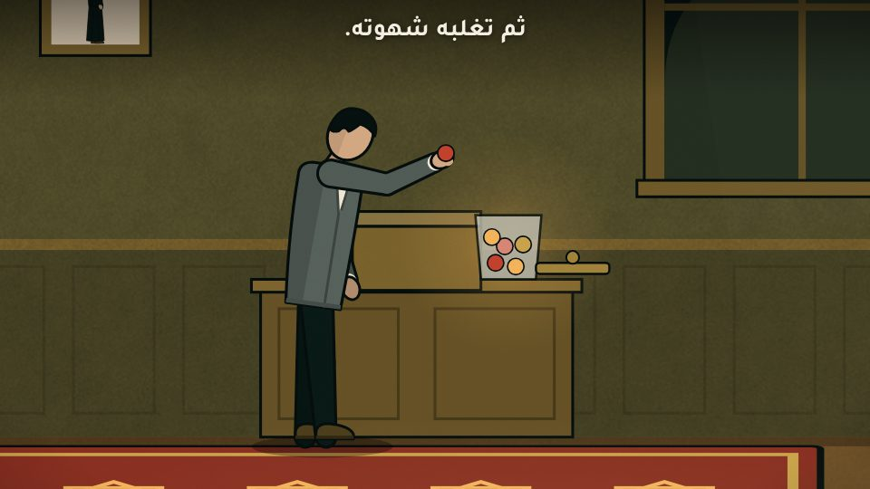

وقد يعرف أن عليه ترك عادة سيئة، ثم تغلبه شهوته.
c3-s22 · حكايات الحارة · 12.3 ث معدّل


ولهذا فإن طلب الهداية لا يقتصر على معرفة الطريق، بل يشمل الاستعداد للسير فيه. وهذا المعنى يجتمع في دعاء قصير، تتكامل فيه المعرفة والعمل.